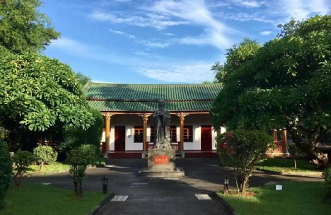

- 实拍观察
- 本轮模型表达

01 / THE OBSERVATORY
照片里有什么，模型就从哪里开始。
把外观，读成细节。
02 / A LITTLE MATERIAL LAB
原创程序材质 · 与三维场景共用生成器
让表面，
有自己的性格。
不用一张照片贴满整栋楼。
勾缝、瓦沟、颗粒与木纹，
在走近时才慢慢出现。
ORIGINAL / REPEATING SURFACE
03 / LIGHT STUDIES
同一座校园，
换一种光再看。
晨光把瓦面托亮，雨后让石材沉下去，
薄暮把长廊写成一排剪影。
YOUR POCKET NOTEBOOK
把看见的，留一页。
还没有收藏建筑。选一个细节开始。
只保存在当前浏览器；无账号，不上传。资料暂时未能读取。请通过本地静态服务器打开本页，或先进入 校园漫游 ↗。